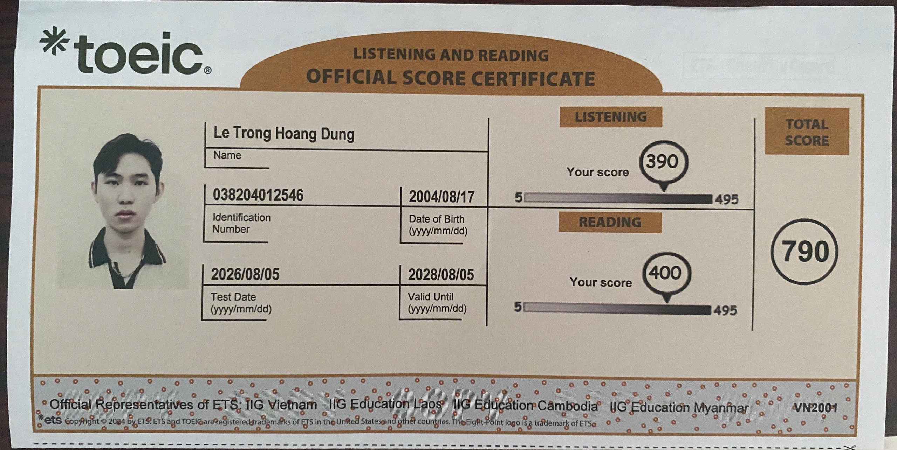
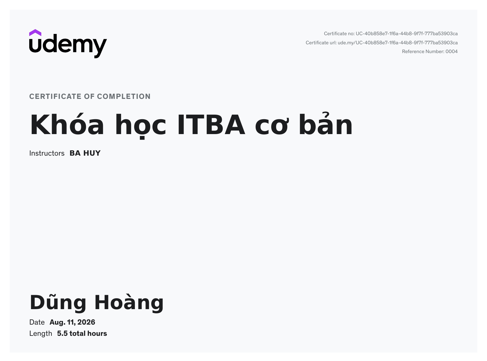

<title>Lê Trọng Hoàng Dũng</title>
<link rel="stylesheet" href="assets/styles.css">

<link rel="preconnect" href="https://fonts.googleapis.com">
<link href="https://fonts.googleapis.com/css2?family=Space+Grotesk:wght@500;600;700&family=Inter:wght@400;500;600;700&family=IBM+Plex+Mono:wght@500;600&display=swap" rel="stylesheet">

<nav class="site-nav">
  <a class="brand" href="index.html">
    <span class="name">Lê Trọng Hoàng Dũng</span>
    <span class="role">BA Intern Candidate</span>
  </a>
  <div class="site-nav-links">
    <a href="index.html" class="active">Home</a>
    <a href="case-hrms.html">Case 01 · HRMS</a>
    <a href="case-stock.html">Case 02 · Stock</a>
    <a href="case-momen.html">Case 03 · Momen</a>
    <a href="assets/CV_BusinessAnalyst_LeTrongHoangDung.pdf" target="_blank" rel="noopener">CV</a>
  </div>
  <div class="site-nav-icons">
    <a class="icon-link" href="mailto:dungletronghoang@gmail.com" aria-label="Email">
      
    </a>
    <a class="icon-link" href="https://linkedin.com/in/letronghoangdung" aria-label="LinkedIn" target="_blank" rel="noopener">
      <svg viewBox="0 0 24 24" aria-hidden="true"><rect width="24" height="24" rx="4" fill="#0A66C2"/><path fill="#fff" d="M8.5 9.5H5V19h3.5V9.5zM6.75 8.25a2 2 0 1 0 0-4 2 2 0 0 0 0 4zM19 19h-3.5v-5.1c0-1.2-.4-2-1.5-2s-1.7.8-2 1.6c-.1.3-.1.6-.1 1V19H8.4s.05-8.7 0-9.5H12v1.35c.5-.7 1.3-1.7 3.2-1.7 2.3 0 4 1.5 4 4.8V19z"/></svg>
    </a>
    <a class="icon-link" href="https://github.com/Dungle-24" aria-label="GitHub" target="_blank" rel="noopener">
      <svg viewBox="0 0 24 24" aria-hidden="true"><rect width="24" height="24" rx="4" fill="#181717"/><path fill="#fff" transform="translate(4,4) scale(0.667)" d="M12 .5C5.7.5.5 5.7.5 12c0 5.1 3.3 9.4 7.9 10.9.6.1.8-.2.8-.6v-2.2c-3.2.7-3.9-1.5-3.9-1.5-.5-1.3-1.3-1.7-1.3-1.7-1.1-.7.1-.7.1-.7 1.2.1 1.8 1.2 1.8 1.2 1 1.8 2.8 1.3 3.5 1 .1-.8.4-1.3.8-1.6-2.6-.3-5.3-1.3-5.3-5.9 0-1.3.5-2.4 1.2-3.2-.1-.3-.5-1.5.1-3.2 0 0 1-.3 3.3 1.2a11.4 11.4 0 0 1 6 0c2.3-1.5 3.3-1.2 3.3-1.2.6 1.7.2 2.9.1 3.2.8.8 1.2 1.9 1.2 3.2 0 4.6-2.7 5.6-5.3 5.9.4.4.8 1.1.8 2.2v3.3c0 .3.2.7.8.6A11.5 11.5 0 0 0 23.5 12c0-6.3-5.2-11.5-11.5-11.5z"/></svg>
    </a>
    <a class="icon-link" href="https://www.facebook.com/dung.le.650309/" aria-label="Facebook" target="_blank" rel="noopener">
      
    </a>
  </div>
</nav>

<nav class="page-progress" aria-label="On this page" id="pageProgress">
  <a href="#cover" data-progress="cover" class="active">Cover</a>
  <a href="#summary" data-progress="summary">Summary</a>
  <a href="#matrix" data-progress="matrix">Capability Matrix</a>
  <a href="#cases" data-progress="cases">Case Files</a>
  <a href="#education" data-progress="education">Credentials</a>
  <a href="#contact" data-progress="contact">Contact</a>
</nav>

<main>
      <section id="cover">
        <div class="hero">
          <div>
            <h1>Lê Trọng Hoàng Dũng</h1>
            <div class="role-line">Aspiring IT Business Analyst</div>
            <p class="pitch">Final-year Information Systems student at UIT. I turn messy business problems into requirements, workflows, and specs — then stay through UAT to see them shipped. Three case files below cover the full loop: elicitation → UML/BPMN modeling → wireframes → delivery.</p>
            <div class="hero-meta">
              <span class="pill status"><span class="dot"></span>Open to BA Intern roles</span>
              <span class="pill">Ho Chi Minh City, VN</span>
              <span class="pill">Graduating Feb 2027</span>
            </div>
          </div>
          <div class="hero-photo">
            <div class="album-frame">
              <svg width="0" height="0" style="position:absolute" aria-hidden="true">
                <defs>
                  <linearGradient id="chromeGrad" x1="0%" y1="0%" x2="100%" y2="100%">
                    <stop offset="0%" stop-color="#E2E8F0"/>
                    <stop offset="45%" stop-color="#FFFFFF"/>
                    <stop offset="100%" stop-color="#64748B"/>
                  </linearGradient>
                </defs>
              </svg>

              <div class="punch-col" aria-hidden="true">
                <span class="punch-hole" style="top:2px"></span>
                <span class="punch-hole" style="top:31px"></span>
                <span class="punch-hole" style="top:60px"></span>
                <span class="punch-hole" style="top:89px"></span>
                <span class="punch-hole" style="top:118px"></span>
                <span class="punch-hole" style="top:147px"></span>
                <span class="punch-hole" style="top:176px"></span>
                <span class="punch-hole" style="top:205px"></span>
                <span class="punch-hole" style="top:234px"></span>
              </div>

              <svg class="wire-loops" viewBox="0 0 34 252" aria-hidden="true">
                <g fill="none" stroke="url(#chromeGrad)" stroke-linecap="round">
                  <path stroke-width="1.7" d="M3 1   Q18 1   24 9"/>  <path stroke-width="1.3" d="M3 5   Q15 5   21 12"/>
                  <path stroke-width="1.7" d="M3 30  Q18 30  24 38"/> <path stroke-width="1.3" d="M3 34  Q15 34  21 41"/>
                  <path stroke-width="1.7" d="M3 59  Q18 59  24 67"/> <path stroke-width="1.3" d="M3 63  Q15 63  21 70"/>
                  <path stroke-width="1.7" d="M3 88  Q18 88  24 96"/> <path stroke-width="1.3" d="M3 92  Q15 92  21 99"/>
                  <path stroke-width="1.7" d="M3 117 Q18 117 24 125"/><path stroke-width="1.3" d="M3 121 Q15 121 21 128"/>
                  <path stroke-width="1.7" d="M3 146 Q18 146 24 154"/><path stroke-width="1.3" d="M3 150 Q15 150 21 157"/>
                  <path stroke-width="1.7" d="M3 175 Q18 175 24 183"/><path stroke-width="1.3" d="M3 179 Q15 179 21 186"/>
                  <path stroke-width="1.7" d="M3 204 Q18 204 24 212"/><path stroke-width="1.3" d="M3 208 Q15 208 21 215"/>
                  <path stroke-width="1.7" d="M3 233 Q18 233 24 241"/><path stroke-width="1.3" d="M3 237 Q15 237 21 244"/>
                </g>
              </svg>

              <div class="photo-stack" id="photoStack">
              <button type="button" class="photo-card-item" data-photo="0">
                <span class="card-face card-front">
                  
                </span>
                <span class="card-face card-back"><span class="mono">01 · LTHD</span></span>
              </button>
              <button type="button" class="photo-card-item" data-photo="1">
                <span class="card-face card-front">
                  
                </span>
                <span class="card-face card-back"><span class="mono">02 · LTHD</span></span>
              </button>
              <button type="button" class="photo-card-item" data-photo="2">
                <span class="card-face card-front">
                  
                </span>
                <span class="card-face card-back"><span class="mono">03 · LTHD</span></span>
              </button>
              </div>
            </div>
            <div class="stack-controls">
              <button type="button" class="stack-btn" id="stackPrev" aria-label="Previous photo">‹</button>
              <span class="stack-hint mono">swipe to flip</span>
              <button type="button" class="stack-btn" id="stackNext" aria-label="Next photo">›</button>
            </div>
          </div>
        </div>

        <div class="doc-control">
          <div class="doc-control-head mono">Document Control</div>
          <dl>
            <div><dt>Document</dt><dd>Candidate Profile — L.T.H. Dũng</dd></div>
            <div><dt>Status</dt><dd>Active · Seeking BA Internship</dd></div>
            <div><dt>Institution</dt><dd>University of Information Technology (UIT)</dd></div>
            <div><dt>Contact</dt><dd>dungletronghoang@gmail.com</dd></div>
          </dl>
        </div>
      </section>

      <section id="summary">
        <div class="eyebrow"><span class="num">01</span>Summary</div>
        <h2 class="section-title">Where I've built BA reps</h2>
        <p class="section-lede">Strong foundation in requirement elicitation, user story mapping, and workflow modeling (UML/BPMN), with hands-on experience across three end-to-end software projects — Agile delivery, UAT, and cross-functional collaboration, plus working technical literacy in SQL and REST APIs. Along the way I've picked up TOEIC 790/990 and a habit of staying on a project through UAT rather than handing it off after the spec is written.</p>
      </section>

      <section id="matrix">
        <div class="eyebrow"><span class="num">02</span>Capability Matrix</div>
        <h2 class="section-title">What I bring to a BA seat</h2>
        <p class="section-lede">Grouped the way they show up on the job — from eliciting a requirement to shipping and validating it.</p>
        <div class="matrix">
          <div class="matrix-row">
            <div class="cat"><span class="id mono">BA-01</span><span class="name">Business Analysis</span></div>
            <div class="tags">
              <span class="tag">Requirement Elicitation</span><span class="tag">User Stories &amp; Acceptance Criteria</span><span class="tag">Functional Specification</span><span class="tag">Use Case Specification</span><span class="tag">BPMN / UML Process Modeling</span><span class="tag">Wireframing &amp; Prototyping</span><span class="tag">UAT Support</span>
            </div>
          </div>
          <div class="matrix-row">
            <div class="cat"><span class="id mono">BA-02</span><span class="name">Tools &amp; Management</span></div>
            <div class="tags">
              <span class="tag has-icon"><svg class="tag-icon" viewBox="0 0 48 48" aria-hidden="true"><path fill="#2684ff" d="M46.012 0H22.904c0 5.76 4.663 10.422 10.423 10.422h4.251v4.115c0 5.76 4.663 10.423 10.423 10.423V1.988a1.99 1.99 0 0 0-1.989-1.989z"/><path fill="url(#jiraGradA)" d="M21.28 9.76H9.726a5.21 5.21 0 0 0 5.211 5.211h2.126v2.058a5.21 5.21 0 0 0 5.212 5.211V10.754a.995.995 0 0 0-.995-.994" transform="matrix(2 0 0 2 -8 -8)"/><path fill="url(#jiraGradB)" d="M15.554 15.52H4a5.21 5.21 0 0 0 5.211 5.211h2.126v2.058A5.21 5.21 0 0 0 16.55 28V16.514a.995.995 0 0 0-.995-.994z" transform="matrix(2 0 0 2 -8 -8)"/><defs><linearGradient id="jiraGradA" x1="22.034" x2="17.118" y1="9.773" y2="14.842" gradientUnits="userSpaceOnUse"><stop offset=".176" stop-color="#0052CC"/><stop offset="1" stop-color="#2684FF"/></linearGradient><linearGradient id="jiraGradB" x1="16.641" x2="10.957" y1="15.564" y2="21.094" gradientUnits="userSpaceOnUse"><stop offset=".176" stop-color="#0052CC"/><stop offset="1" stop-color="#2684FF"/></linearGradient></defs></svg>Jira</span>
              <span class="tag has-icon"><svg class="tag-icon" viewBox="0 0 16 16" aria-hidden="true"><circle cx="8" cy="4.5" r="2.2" fill="#A259FF"/><path d="M4 8.5a2.2 2.2 0 1 1 4.4 0v2.2H6.2A2.2 2.2 0 0 1 4 8.5z" fill="#F24E1E"/><path d="M8.4 6.3h1.8a2.2 2.2 0 1 1 0 4.4H8.4V6.3z" fill="#1ABCFE"/><circle cx="6.2" cy="13" r="2.2" fill="#0ACF83"/></svg>Figma</span>
              <span class="tag has-icon">Confluence</span>
              <span class="tag has-icon"><svg class="tag-icon" viewBox="0 0 16 16" aria-hidden="true"><circle cx="8" cy="8" r="7" fill="#FF6C37"/><circle cx="8" cy="8" r="4.2" fill="none" stroke="#fff" stroke-width="1.1"/><circle cx="8" cy="4.6" r="1" fill="#fff"/></svg>Postman</span>
              <span class="tag has-icon"><svg class="tag-icon" viewBox="0 0 16 16" aria-hidden="true"><rect width="16" height="16" rx="3.5" fill="#F08705"/><rect x="6" y="1.5" width="4" height="4" rx="1.2" fill="#fff"/><rect x="1.5" y="9.5" width="4" height="4" rx="1.2" fill="#fff"/><rect x="10.5" y="9.5" width="4" height="4" rx="1.2" fill="#fff"/><path d="M7 5.5 L3.5 9.5 M9 5.5 L12.5 9.5" stroke="#fff" stroke-width="1.3" fill="none" stroke-linecap="round"/></svg>Draw.io</span>
              <span class="tag has-icon"><svg class="tag-icon" viewBox="0 0 16 16" aria-hidden="true"><polygon points="8,8 8,1 10.24,4.93" fill="#9E1B4D"/><polygon points="8,8 10.24,4.93 14.66,5.84" fill="#EC1E63"/><polygon points="8,8 14.66,5.84 11.61,9.17" fill="#8C8C8C"/><polygon points="8,8 11.61,9.17 12.11,13.66" fill="#C7C8CA"/><polygon points="8,8 12.11,13.66 8,11.8" fill="#1B1550"/><polygon points="8,8 8,11.8 3.89,13.66" fill="#4B2E9E"/><polygon points="8,8 3.89,13.66 4.39,9.17" fill="#8763EE"/><polygon points="8,8 4.39,9.17 1.34,5.84" fill="#FDB813"/><polygon points="8,8 1.34,5.84 5.77,4.93" fill="#FFD54A"/><polygon points="8,8 5.77,4.93 8,1" fill="#FFC845"/></svg>StarUML</span>
              <span class="tag">WBS / Gantt</span>
              <span class="tag has-icon"><svg class="tag-icon" viewBox="0 0 16 16" aria-hidden="true"><rect x="1" y="1" width="6.3" height="6.3" rx="1" fill="#EF6C00"/><rect x="8.7" y="1" width="6.3" height="6.3" rx="1" fill="#7CBB00"/><rect x="1" y="8.7" width="6.3" height="6.3" rx="1" fill="#00A4EF"/><rect x="8.7" y="8.7" width="6.3" height="6.3" rx="1" fill="#FFB900"/></svg>MS Office</span>
            </div>
          </div>
          <div class="matrix-row">
            <div class="cat"><span class="id mono">BA-03</span><span class="name">Technical Literacy</span></div>
            <div class="tags">
              <span class="tag">SQL — PostgreSQL, MongoDB</span><span class="tag">ERD / Schema Design</span><span class="tag">REST API Specification</span><span class="tag">Web &amp; Mobile Stack</span>
            </div>
          </div>
          <div class="matrix-row">
            <div class="cat"><span class="id mono">BA-04</span><span class="name">Process &amp; Soft Skills</span></div>
            <div class="tags">
              <span class="tag">Agile / Scrum</span><span class="tag">SDLC</span><span class="tag">Analytical Thinking</span><span class="tag">Problem Solving</span><span class="tag">Cross-functional Communication</span><span class="tag">Team Collaboration</span>
            </div>
          </div>
        </div>
      </section>

      <section id="cases">
        <div class="eyebrow"><span class="num">03</span>Case Files</div>
        <h2 class="section-title">Three projects, start to finish</h2>
        <p class="section-lede">Full diagrams, wireframes, and reports for each are being organized into standalone case-study pages next — this is the working summary.</p>

        <article class="case-file">
          <div class="case-head">
            <span class="case-id mono">CASE-01</span>
            <h3>Company Recruitment Management System</h3>
            <span class="case-meta">BA / Scrum Master · Mar–May 2025 · 61 days</span>
          </div>
          <h4>Problem</h4>
          <p class="problem">Manual recruitment left HR with low visibility into candidates, frequent errors, and slow hiring cycles.</p>
          <h4>What I did</h4>
          <ul>
            <li>Elicited functional requirements, wrote user stories, and managed the product backlog in Jira across 4 hybrid Agile/Waterfall sprints.</li>
            <li>Designed UI/UX wireframes and interactive prototypes in Figma for the candidate portal and HR dashboard (~35 screens).</li>
            <li>Built the WBS, Gantt chart, and AON critical-path diagram; tracked cost with bottom-up estimation and EVM.</li>
            <li>Ran UAT against the six in-scope modules before sign-off.</li>
          </ul>
          <div class="case-footer">
            <div class="tags"><span class="tag">WBS &amp; Gantt</span><span class="tag">AON Critical Path</span><span class="tag">EVM Cost Report</span><span class="tag">PMBOK Risk Register</span><span class="tag">UAT Report</span></div>
            <div class="case-links">
              <a class="repo-link view-case" href="case-hrms.html">View case study
                <svg viewBox="0 0 24 24" fill="none" stroke="currentColor" stroke-width="2"><path d="M5 12h14M13 6l6 6-6 6"/></svg>
              </a>
              <a class="repo-link" href="https://github.com/Nusuit/recruitment-website" target="_blank" rel="noopener">Repository
                <svg viewBox="0 0 24 24" fill="none" stroke="currentColor" stroke-width="2"><path d="M7 17L17 7M9 7h8v8"/></svg>
              </a>
            </div>
          </div>
        </article>

        <article class="case-file">
          <div class="case-head">
            <span class="case-id mono">CASE-02</span>
            <h3>Intelligent Investment Support System</h3>
            <span class="case-meta">System / Business Analyst · Nov 2025–Feb 2026</span>
          </div>
          <h4>Problem</h4>
          <p class="problem">Individual investors track stocks across scattered spreadsheets and tools — no open, modular platform for real-time, multi-source portfolio analytics.</p>
          <h4>What I did</h4>
          <ul>
            <li>Gathered functional and non-functional requirements for a real-time stock analytics platform.</li>
            <li>Modeled the system with Use Case, Activity, Sequence, Class, and State diagrams across a 5-service microservices architecture.</li>
            <li>Designed the ERD and specified REST APIs plus WebSocket data flows, including Redis caching and Kafka pub/sub.</li>
            <li>Documented the design rationale — why Kafka over direct WebSocket, why add Redis Streams, why split services — for the technical review.</li>
          </ul>
          <h4>Outcome</h4>
          <div class="metric-chips">
            <span class="metric-chip"><b>5</b> services specified end-to-end</span>
            <span class="metric-chip"><b>2</b> data paths documented <span class="mono" style="color:var(--text-faint)">(real-time + reporting)</span></span>
          </div>
          <div class="case-footer">
            <div class="tags"><span class="tag">Use Case / Activity / Sequence / State</span><span class="tag">ERD</span><span class="tag">REST &amp; WebSocket Spec</span><span class="tag">Architecture Rationale</span></div>
            <div class="case-links">
              <a class="repo-link view-case" href="case-stock.html">View case study
                <svg viewBox="0 0 24 24" fill="none" stroke="currentColor" stroke-width="2"><path d="M5 12h14M13 6l6 6-6 6"/></svg>
              </a>
              <a class="repo-link" href="https://github.com/kienphan283/stock_frontend" target="_blank" rel="noopener">Repository
                <svg viewBox="0 0 24 24" fill="none" stroke="currentColor" stroke-width="2"><path d="M7 17L17 7M9 7h8v8"/></svg>
              </a>
            </div>
          </div>
        </article>

        <article class="case-file">
          <div class="case-head">
            <span class="case-id mono">CASE-03</span>
            <h3>Momen — Photo-Based Expense Tracker</h3>
            <span class="case-meta">BA / Full-Stack &amp; UI/UX · Mar–Jun 2026 · Mobile</span>
          </div>
          <h4>Problem</h4>
          <p class="problem">Users want to share moments with close friends without posting publicly — and personal expense tracking stays disconnected from how they actually spend, through photos and captions.</p>
          <h4>What I did</h4>
          <ul>
            <li>Mapped three user pain points — privacy, scattered memories, tedious expense tracking — to four core modules: Auth, Feed &amp; Camera, Spending, and Memories.</li>
            <li>Specified the offline-first posting flow (local save → upload queue → background sync) and the regex-based caption-to-expense extraction logic.</li>
            <li>Documented the Clean Architecture layering (Presentation / Domain / Data) and the four-phase authentication flow, backed by Supabase (Auth, PostgreSQL, Row Level Security).</li>
          </ul>
          <h4>Outcome</h4>
          <div class="metric-chips">
            <span class="metric-chip"><b>4</b> core modules shipped</span>
            <span class="metric-chip">Regex-based auto-expense detection from captions</span>
          </div>
          <div class="case-footer">
            <div class="tags"><span class="tag">User Journey Map</span><span class="tag">Clean Architecture Spec</span><span class="tag">Offline-First Design</span></div>
            <div class="case-links">
              <a class="repo-link view-case" href="case-momen.html">View case study
                <svg viewBox="0 0 24 24" fill="none" stroke="currentColor" stroke-width="2"><path d="M5 12h14M13 6l6 6-6 6"/></svg>
              </a>
              <a class="repo-link" href="https://github.com/Nusuit/momen.git" target="_blank" rel="noopener">Repository
                <svg viewBox="0 0 24 24" fill="none" stroke="currentColor" stroke-width="2"><path d="M7 17L17 7M9 7h8v8"/></svg>
              </a>
            </div>
          </div>
        </article>
      </section>

      <section id="education">
        <div class="eyebrow"><span class="num">04</span>Credentials</div>
        <h2 class="section-title">Education &amp; certifications</h2>
        <div class="creds2" id="creds2">
          <div class="creds2-master">
            <div class="creds2-group">
              <div class="creds2-group-label mono">Education</div>
              <button type="button" class="creds2-item is-active" data-cred="edu">
                <span class="creds2-item-text">
                  <span class="creds2-item-title">Bachelor of Information Systems</span>
                  <span class="creds2-item-sub">University of Information Technology (UIT) · 2022–2027</span>
                </span>
                <svg class="creds2-chevron" viewBox="0 0 24 24" fill="none" stroke="currentColor" stroke-width="2"><path d="M9 6l6 6-6 6"/></svg>
              </button>
            </div>
            <div class="creds2-group">
              <div class="creds2-group-label mono">Certifications</div>
              <button type="button" class="creds2-item" data-cred="toeic">
                <span class="creds2-item-text">
                  <span class="creds2-item-title">TOEIC Listening &amp; Reading</span>
                  <span class="creds2-item-sub">Official Score Report · 790/990</span>
                </span>
                <svg class="creds2-chevron" viewBox="0 0 24 24" fill="none" stroke="currentColor" stroke-width="2"><path d="M9 6l6 6-6 6"/></svg>
              </button>
              <button type="button" class="creds2-item" data-cred="itba">
                <span class="creds2-item-text">
                  <span class="creds2-item-title">IT Business Analysis Fundamentals</span>
                  <span class="creds2-item-sub">Udemy Certificate · 5.5 total hours</span>
                </span>
                <svg class="creds2-chevron" viewBox="0 0 24 24" fill="none" stroke="currentColor" stroke-width="2"><path d="M9 6l6 6-6 6"/></svg>
              </button>
            </div>
            <div class="creds2-group">
              <div class="creds2-group-label mono">Languages</div>
              <button type="button" class="creds2-item" data-cred="lang">
                <span class="creds2-item-text">
                  <span class="creds2-item-title">English &amp; Vietnamese</span>
                  <span class="creds2-item-sub">Professional Working · Native</span>
                </span>
                <svg class="creds2-chevron" viewBox="0 0 24 24" fill="none" stroke="currentColor" stroke-width="2"><path d="M9 6l6 6-6 6"/></svg>
              </button>
            </div>
          </div>

          <div class="creds2-detail">
            <div class="creds2-stack">
              <div class="creds2-frame is-active" data-cred-pane="edu">
                <div class="creds2-stacked">
                  <div class="creds2-stacked-item"></div>
                  <div class="creds2-stacked-item"></div>
                </div>
              </div>
              <div class="creds2-frame" data-cred-pane="toeic">
                <div class="creds2-multi"></div>
              </div>
              <div class="creds2-frame" data-cred-pane="itba">
                <div class="creds2-multi"></div>
              </div>
              <div class="creds2-frame" data-cred-pane="lang">
                <div class="creds2-lang">
                  <div class="creds2-lang-row">
                    <span class="lang-name"><svg class="flag-icon" viewBox="0 0 24 16" aria-hidden="true"><rect width="24" height="16" fill="#00247D"/><path d="M0 0L24 16M24 0L0 16" stroke="#fff" stroke-width="3"/><path d="M0 0L24 16M24 0L0 16" stroke="#CF142B" stroke-width="1.3"/><path d="M12 0V16M0 8H24" stroke="#fff" stroke-width="5"/><path d="M12 0V16M0 8H24" stroke="#CF142B" stroke-width="2.2"/></svg>English</span>
                    <span class="mono">Professional Working</span>
                  </div>
                  <div class="creds2-lang-row">
                    <span class="lang-name"><svg class="flag-icon" viewBox="0 0 24 16" aria-hidden="true"><rect width="24" height="16" fill="#DA251D"/><polygon points="12,3 13.4,7.1 17.8,7.1 14.3,9.6 15.6,13.7 12,11.1 8.4,13.7 9.7,9.6 6.2,7.1 10.6,7.1" fill="#FFCD00"/></svg>Vietnamese</span>
                    <span class="mono">Native</span>
                  </div>
                </div>
              </div>
            </div>
          </div>
        </div>
      </section>

      <section id="contact">
        <div class="eyebrow"><span class="num">05</span>Contact</div>
        <h2 class="section-title">Let's talk</h2>
        <p class="section-lede">Open to BA Intern roles in Ho Chi Minh City or remote. Reach out through any of these.</p>
        <div class="contact-grid">
          <a class="contact-item" href="mailto:dungletronghoang@gmail.com">
            <span class="ic"></span>
            <span><span class="k">Email</span><br><span class="v">dungletronghoang@gmail.com</span></span>
          </a>
          <a class="contact-item" href="tel:+84942557949">
            <span class="ic"><svg viewBox="0 0 24 24" fill="none" stroke="currentColor" stroke-width="1.75"><path d="M6 3h3l2 5-2.5 1.5a11 11 0 0 0 5 5L15 12l5 2v3a2 2 0 0 1-2 2A16 16 0 0 1 4 5a2 2 0 0 1 2-2z"/></svg></span>
            <span><span class="k">Phone</span><br><span class="v">(+84) 942 557 949</span></span>
          </a>
          <a class="contact-item" href="https://linkedin.com/in/letronghoangdung" target="_blank" rel="noopener">
            <span class="ic"><svg viewBox="0 0 24 24" aria-hidden="true"><rect width="24" height="24" rx="4" fill="#0A66C2"/><path fill="#fff" d="M8.5 9.5H5V19h3.5V9.5zM6.75 8.25a2 2 0 1 0 0-4 2 2 0 0 0 0 4zM19 19h-3.5v-5.1c0-1.2-.4-2-1.5-2s-1.7.8-2 1.6c-.1.3-.1.6-.1 1V19H8.4s.05-8.7 0-9.5H12v1.35c.5-.7 1.3-1.7 3.2-1.7 2.3 0 4 1.5 4 4.8V19z"/></svg></span>
            <span><span class="k">LinkedIn</span><br><span class="v">/in/letronghoangdung</span></span>
          </a>
          <a class="contact-item" href="https://github.com/Dungle-24" target="_blank" rel="noopener">
            <span class="ic"><svg viewBox="0 0 24 24" aria-hidden="true"><rect width="24" height="24" rx="4" fill="#181717"/><path fill="#fff" transform="translate(4,4) scale(0.667)" d="M12 .5C5.7.5.5 5.7.5 12c0 5.1 3.3 9.4 7.9 10.9.6.1.8-.2.8-.6v-2.2c-3.2.7-3.9-1.5-3.9-1.5-.5-1.3-1.3-1.7-1.3-1.7-1.1-.7.1-.7.1-.7 1.2.1 1.8 1.2 1.8 1.2 1 1.8 2.8 1.3 3.5 1 .1-.8.4-1.3.8-1.6-2.6-.3-5.3-1.3-5.3-5.9 0-1.3.5-2.4 1.2-3.2-.1-.3-.5-1.5.1-3.2 0 0 1-.3 3.3 1.2a11.4 11.4 0 0 1 6 0c2.3-1.5 3.3-1.2 3.3-1.2.6 1.7.2 2.9.1 3.2.8.8 1.2 1.9 1.2 3.2 0 4.6-2.7 5.6-5.3 5.9.4.4.8 1.1.8 2.2v3.3c0 .3.2.7.8.6A11.5 11.5 0 0 0 23.5 12c0-6.3-5.2-11.5-11.5-11.5z"/></svg></span>
            <span><span class="k">GitHub</span><br><span class="v">Dungle-24</span></span>
          </a>
          <a class="contact-item" href="https://www.facebook.com/dung.le.650309/" target="_blank" rel="noopener">
            <span class="ic"></span>
            <span><span class="k">Facebook</span><br><span class="v">dung.le.650309</span></span>
          </a>
        </div>
      </section>

      <footer class="sign">CANDIDATE-PROFILE · REV 1.0 · Lê Trọng Hoàng Dũng</footer>
    </main>

<script>
(function(){
  try{
    var stack = document.getElementById('photoStack');
    if(!stack) return;
    var cards = Array.prototype.slice.call(stack.querySelectorAll('.photo-card-item'));
    var order = [0,1,2];
    var reduceMotion = window.matchMedia && window.matchMedia('(prefers-reduced-motion: reduce)').matches;

    var slots = [
      {tx:'0px',  ty:'0px',  s:1,    z:3},
      {tx:'6px',  ty:'6px',  s:0.99, z:2},
      {tx:'11px', ty:'11px', s:0.98, z:1}
    ];

    function baseTransform(card){
      card.style.transition = 'none';
      card.style.transformOrigin = '';
      card.style.transform = '';
      // force reflow so the next transition re-enables cleanly
      void card.offsetWidth;
      card.style.transition = '';
    }

    function render(){
      order.forEach(function(cardIndex, slotIndex){
        var card = cards[cardIndex];
        var slot = slots[slotIndex];
        card.style.setProperty('--tx', slot.tx);
        card.style.setProperty('--ty', slot.ty);
        card.style.setProperty('--s', slot.s);
        card.style.zIndex = slot.z;
        var isFront = slotIndex === 0;
        card.classList.toggle('is-front', isFront);
        card.setAttribute('aria-hidden', isFront ? 'false' : 'true');
        card.tabIndex = isFront ? 0 : -1;
      });
    }

    function next(){ order.push(order.shift()); render(); }
    function prev(){ order.unshift(order.pop()); render(); }

    var nextBtn = document.getElementById('stackNext');
    var prevBtn = document.getElementById('stackPrev');
    if(nextBtn) nextBtn.addEventListener('click', function(){
      var front = stack.querySelector('.photo-card-item.is-front');
      if(front) flipAway(front, -1); else next();
    });
    if(prevBtn) prevBtn.addEventListener('click', function(){
      var front = stack.querySelector('.photo-card-item.is-front');
      if(front) flipAway(front, 1); else prev();
    });

    var TAP_THRESHOLD = 6;
    var COMMIT_ANGLE = 55;
    var MAX_ANGLE = 165;
    var drag = null;

    function setFlip(card, angle){
      card.style.transform =
        'translate(var(--tx,0px), var(--ty,0px)) scale(var(--s,1)) rotateY(' + angle + 'deg)';
    }

    function flipAway(card, dir, onDone){
      var finalAngle = dir < 0 ? -172 : 172;
      card.style.transformOrigin = dir < 0 ? '0% 50%' : '100% 50%';
      card.style.transition = reduceMotion ? 'none' : 'transform 300ms cubic-bezier(.3,.7,.4,1)';
      setFlip(card, finalAngle);
      setTimeout(function(){
        baseTransform(card);
        if(dir < 0) next(); else prev();
        if(onDone) onDone();
      }, reduceMotion ? 0 : 300);
    }

    var justDragged = false;

    cards.forEach(function(card){
      card.addEventListener('click', function(){
        if(justDragged){ justDragged = false; return; }
        if(!card.classList.contains('is-front')) return;
        flipAway(card, -1);
      });

      card.addEventListener('pointerdown', function(e){
        if(!card.classList.contains('is-front')) return;
        card.setPointerCapture(e.pointerId);
        card.style.transition = 'none';
        var rect = card.getBoundingClientRect();
        drag = {card:card, id:e.pointerId, startX:e.clientX, width:rect.width, dx:0};
      });

      card.addEventListener('pointermove', function(e){
        if(!drag || drag.id !== e.pointerId || drag.card !== card) return;
        drag.dx = e.clientX - drag.startX;
        var angle = Math.max(-MAX_ANGLE, Math.min(MAX_ANGLE, (drag.dx / drag.width) * 200));
        card.style.transformOrigin = angle < 0 ? '0% 50%' : '100% 50%';
        setFlip(card, angle);
      });

      function endDrag(e){
        if(!drag || drag.id !== e.pointerId || drag.card !== card) return;
        var dx = drag.dx;
        var wasDrag = Math.abs(dx) > TAP_THRESHOLD;
        var angle = Math.max(-MAX_ANGLE, Math.min(MAX_ANGLE, (dx / drag.width) * 200));
        drag = null;

        if(Math.abs(angle) > COMMIT_ANGLE){
          justDragged = true;
          flipAway(card, angle < 0 ? -1 : 1);
        } else if(wasDrag){
          justDragged = true;
          card.style.transition = reduceMotion ? 'none' : 'transform 260ms cubic-bezier(.2,.8,.2,1)';
          setFlip(card, 0);
        }
      }
      card.addEventListener('pointerup', endDrag);
      card.addEventListener('pointercancel', endDrag);
    });

    render();
  }catch(e){}
})();

(function(){
  try{
    var links = Array.prototype.slice.call(document.querySelectorAll('.page-progress a'));
    if(!links.length) return;
    var sections = links
      .map(function(a){ return document.querySelector(a.getAttribute('href')); })
      .filter(Boolean);

    function setActive(id){
      links.forEach(function(a){ a.classList.toggle('active', a.getAttribute('href') === id); });
    }

    var REF_Y = 96;
    var ticking = false;
    function updateActive(){
      ticking = false;
      var current = sections[0];
      for(var i = 0; i < sections.length; i++){
        if(sections[i].getBoundingClientRect().top - REF_Y <= 0) current = sections[i];
      }
      setActive('#' + current.id);
    }
    function onScroll(){
      if(!ticking){
        ticking = true;
        requestAnimationFrame(updateActive);
      }
    }

    window.addEventListener('scroll', onScroll, {passive:true});
    window.addEventListener('resize', onScroll);
    links.forEach(function(a){
      a.addEventListener('click', function(){ setActive(a.getAttribute('href')); });
    });
    updateActive();
  }catch(e){}
})();

(function(){
  try{
    var creds = document.getElementById('creds2');
    if(!creds) return;
    var items = Array.prototype.slice.call(creds.querySelectorAll('.creds2-item'));
    var frames = Array.prototype.slice.call(creds.querySelectorAll('.creds2-frame'));

    items.forEach(function(item){
      item.addEventListener('click', function(){
        var key = item.getAttribute('data-cred');
        items.forEach(function(i){ i.classList.toggle('is-active', i === item); });
        frames.forEach(function(f){
          f.classList.toggle('is-active', f.getAttribute('data-cred-pane') === key);
        });
      });
    });
  }catch(e){}
})();
</script>
